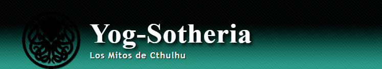

Los siguientes relatos abordan temáticas como la depresión, el suicidio y otros contenidos no aptos para todo público. Son obras de ficción y no reflejan hechos reales ni ideología alguna del autor.
